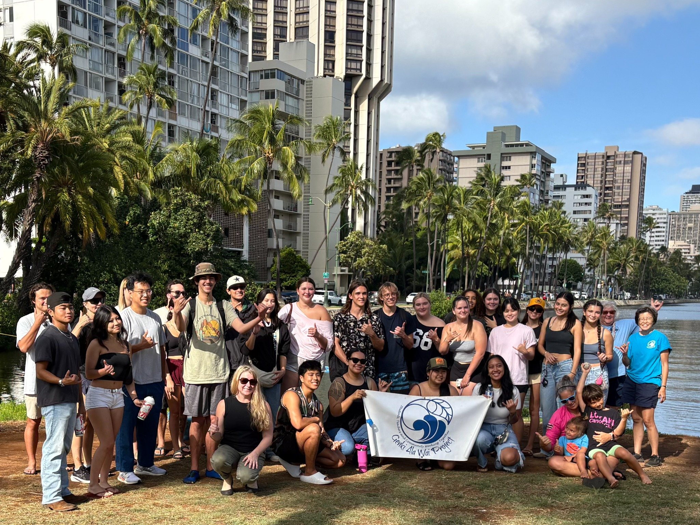
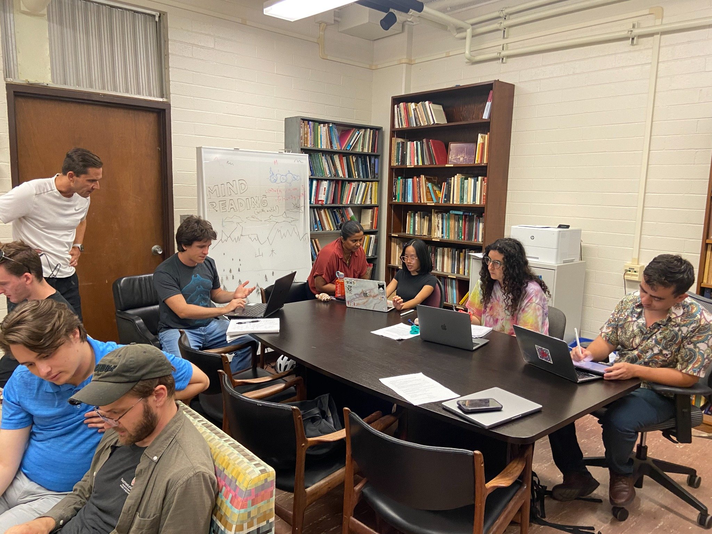

Creating meaningful mathematical experiences
I teach across the undergraduate and graduate curriculum, including applied calculus, probability and statistics, statistical inference, optimization, computational algebra, algebraic statistics, and modern algebra.
I am especially interested in learning experiences that connect mathematical ideas to the world students live in: biological systems, ecological networks, quantitative reasoning, and place-based questions in Hawaiʻi.
Courses
Recent courses include Math 216, Math 100, Math 215, Math 649J, Math 414, Math 372, Math 472, Math 649K, and Math 611.
Pedagogy
Active learning, equitable teaching, project-based assessment, and graduate-student teaching development.
Recognition
MAA Golden Section Alder Award and UH Mānoa Creating Intentional Equity in the Classroom Fellow.

